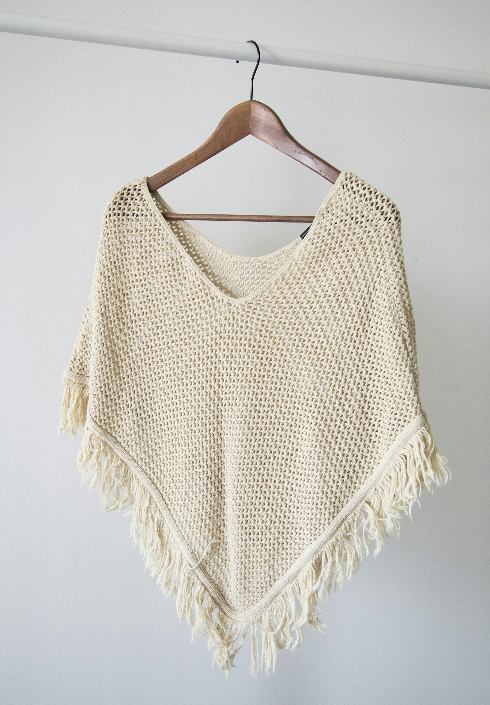

01 — GESTIÓN INTEGRAL
Un proyecto completo.
Una misma dirección.
Somos GAITEX. Acompañamos a clientes internacionales en el desarrollo y la gestión de sus pedidos de prendas de vestir, desde las muestras hasta el despacho.
Nuestro servicio full package integra producción, etiquetado, empaque y revisiones. El área comercial centraliza la comunicación a lo largo del pedido.

Del primer detalle al pedido terminado.FULL PACKAGECada etapa,
Cada etapa,
conectada.
Desarrollo de muestras, producción, etiquetado, empaque, revisiones y despacho. Una gestión integral para tu propuesta textil.
Descubre cómo trabajamos ↗